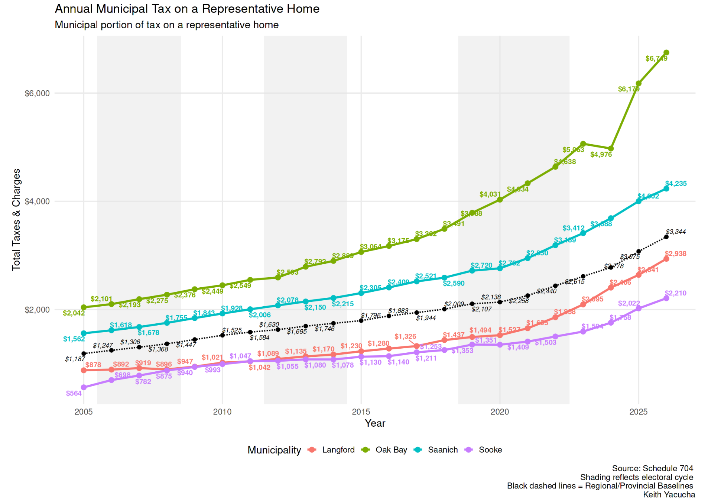
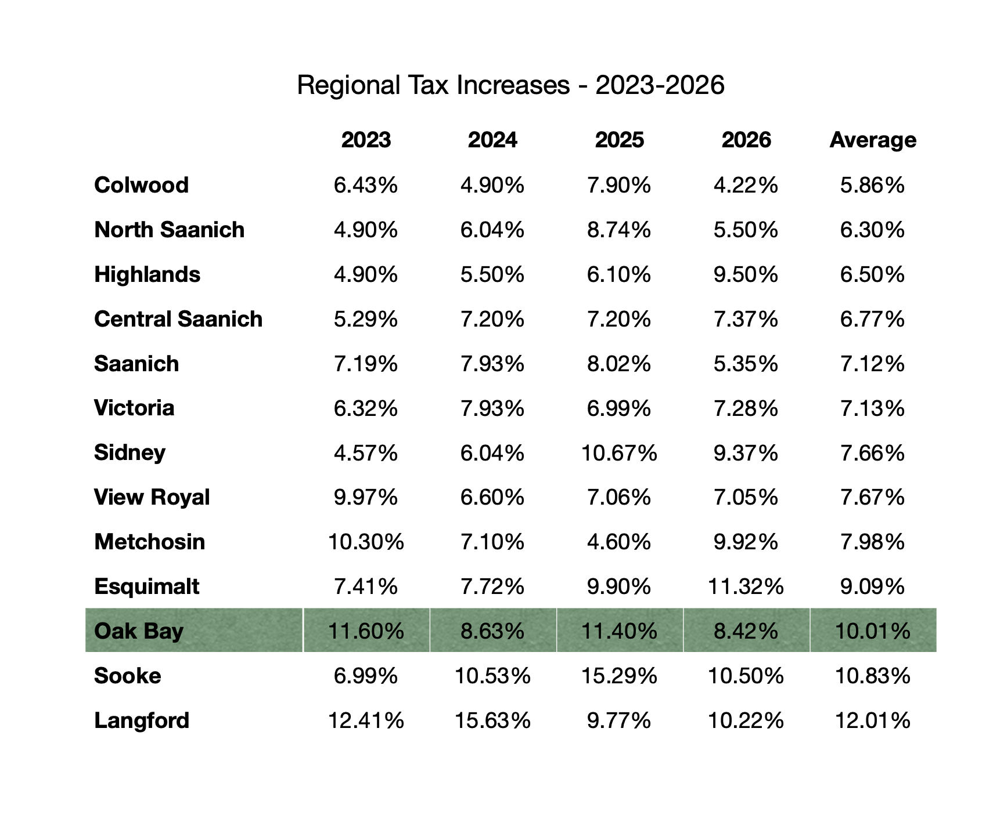

Sam's Platform
Click each section to learn more.
01 Healthcare
Other municipalities in the region are leaders in making sure residents can get care — Colwood has built a clinic and is hiring family doctors, and Victoria has committed to doing the same. It's time for Oak Bay to take action as well. Firstly, I will advocate tirelessly for a seniors' campus of care at the Oak Bay Lodge site. Secondly, I will work to bring a new clinic to Oak Bay. A clinic can be built at low or no cost to the municipality through developer contributions. The clinic will ensure every resident has a family doctor. Once this is achieved, I support expanding the clinic into a real walk-in clinic, which the region has been missing since the pandemic. If the model proves continually successful, I will support hiring specialists for the outpatient care Oak Bay residents desperately need and can't get.
As an aging community with declining access to healthcare services, Oak Bay and the Capital Region as a whole need these investments to avert suffering and deliver a good standard of life.
02 Affordability
Oak Bay residents deserve affordable places to live, affordable ways to get around, and easy access to affordable services. I will prioritize bringing affordable housing to Oak Bay, building out a complete walk, bike, and roll network, as well as bringing better transit to the District. Because of the poor state of Oak Bay's infrastructure, the District is in a difficult position regarding building affordable housing. Putting new housing on a block with a chronically broken sewer main or intermittent water supply is foolhardy.
I commit to a clear and transparent process for legalizing a variety of housing across the District, in lockstep with the necessary replacements to sewer and water mains.
I also support increasing the variety and availability of small businesses across the District. Every neighbourhood deserves access to local services like grocers, bakers, doctors, and veterinarians. Being able to walk or roll to work or services is a big component of both affordability and quality of life, especially for seniors and people with disabilities. Increasing commerce in the District is also an effective way to broaden the tax base, lessening the need for steep tax increases to keep up with urgent infrastructure needs.
03 Infrastructure and Taxes
Oak Bay now has the highest property taxes in the province. High taxes may be worth it if they come with good services.
Instead, Oak Bay is stuck with declining services and an infrastructure maintenance backlog of more than $300 million. I commit to fixing Oak Bay's infrastructure quickly and efficiently. At the same time, I will work to spread out sudden tax increases and build a sustainable tax base.


04 Climate and Community Safety
In 2021, our community was given a stark reminder that heat kills, and climate change is here. Municipalities have a responsibility to protect and prepare residents for the climate crisis, as well as a duty to reduce emissions.
Mirroring Saanich, I will push for a municipal interest-free loan program, managed through property taxes, to help property owners replace outdated furnaces with heat pumps, insulate their homes, and build cooling-off spaces in rental properties. This will have the effect of reducing the largest source of municipal emissions, as well as protecting residents from deadly heatwaves and cold snaps.
I also support an ambitious expansion to Oak Bay's urban forest, as well as the creation of a rain garden program similar to Victoria's. Climate-change-induced drought and flooding mean that municipalities need to take a more active part in stormwater management beyond just pipes under the street. Green infrastructure like rain gardens reduces the load on stormwater systems, protecting residents from flooding, with the added benefit of filtering out pollutants that would otherwise enter our ecosystems.
05 Emergency Preparedness
Significant parts of Oak Bay are vulnerable to flooding from storm surge and tsunami. Sadly, little work has been done to build the needed infrastructure and protect residents.
I will ensure that the needed flood protection infrastructure is built, rather than kicking the can down the road like previous councils.
06 Services and Social Spaces
Oak Bay is small and has to pay a lot to maintain services. I support regional services where appropriate and will pursue serious consideration of regional policing due to steeply rising costs. At the CRD, I also support exploring fully regionalized water and sewer services. Smaller municipalities pay more, and I believe government should have the capacity to maintain and deliver core services in-house. We should not need to rely on consultants for routine services.
Oak Bay also has a shortage of social "third" spaces. Rec centres are a key third space, and I support expanding operating hours to what they were before recent cuts. I also support allowing new neighbourhood coffee shops and supporting programs like resident-led community streets and gardens. I will also push for the creation of an Oak Bay Arts, Culture, and Community Spaces strategy to inventory, protect, maintain, and grow our arts and cultural spaces. Groups like Scouting troops, social dance communities, and community choirs should feel welcome and supported in Oak Bay, and it should feel easy to start a new club or activity in our community.
07 Consultation and Transparency
Consultation is a word that comes up a lot in Oak Bay. I think it's really important to consider when consultation is meaningful, and when it's a box to check (or even a delay tactic). Projects that take longer usually cost more, and Oak Bay has a tight budget.
Firstly, I want to move Oak Bay towards a more iterative approach to change. Instead of looking for the perfect design or policy from the get-go, we should prototype changes—a plywood curb extension here, a policy tweak there. That provides a chance to really test a solution and get meaningful feedback, while also delivering responsive and quick decision-making. Sometimes, big changes are needed, but often slow and small solutions are the best way to get big change at a low cost.
Secondly, I think Oak Bay needs to seriously address the use of consultants for consultation. Oak Bay needs to be able to communicate and get feedback from residents without relying on private companies, especially for routine things.
Thirdly, Oak Bay needs to learn to move faster on important issues, particularly when safety is involved. That means less micromanagement from Council, and a bigger focus on outcomes. Oak Bay has excellent staff, and it is time for Council to trust them to do their jobs. Countless examples, such as Council making line-by-line edits to engineering drawings or spending an hour discussing the colour of paint for a rock, show how better leadership at the Council table is desperately needed. As Mayor, I would strongly discourage extended debate on minutiae and focus on real outcomes for Oak Bay residents.
Finally, Oak Bay needs better transparency and communication from Council. It's easy for communication to get muddled when decisions at the table aren't being made with honest reasoning or a clear connection to desired outcomes. When the District sets goals like creating a safe cycling network, achieving net-zero emissions, or allowing non-market housing, those goals should be directly and transparently tied to each decision. Frankly, it is confusing for the public when the District sets aspirational goals and then makes decisions that appear completely disconnected. I will ensure that my votes at the Council table are clearly tied to this platform and the legislated goals Council sets together with the community.